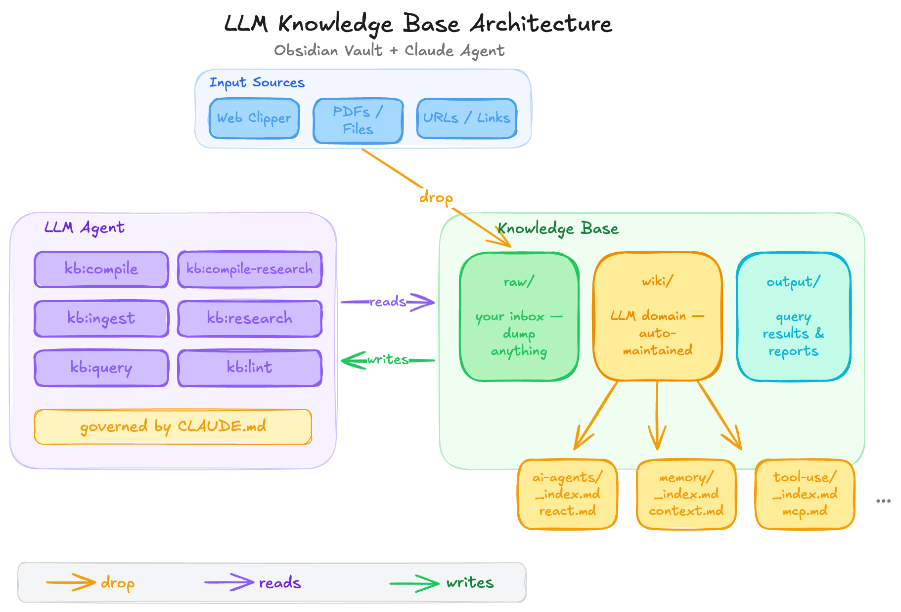
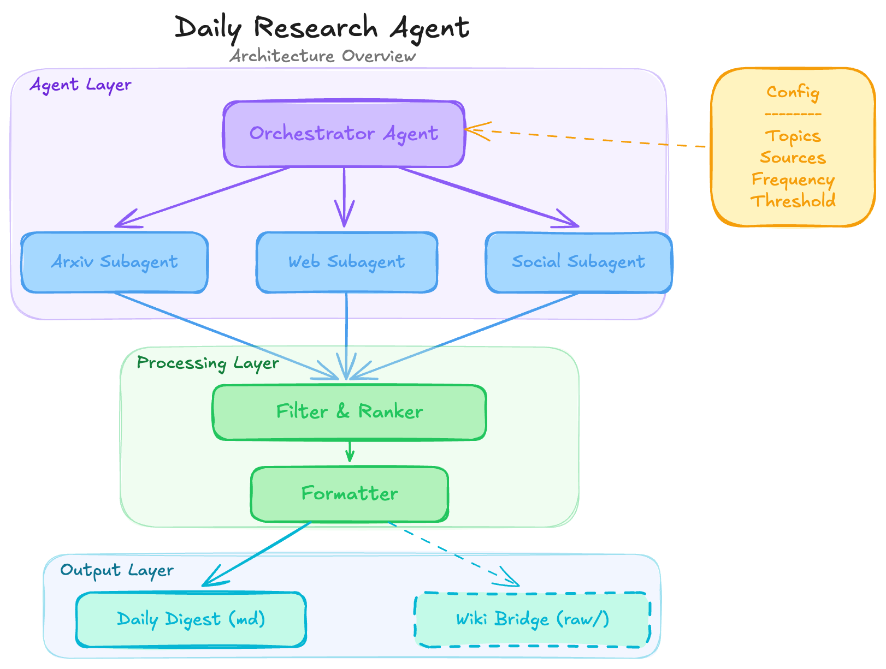

Drop raw sources in, get structured knowledge out. This post walks through a pattern for building a personal LLM-powered wiki — where the LLM acts as a librarian, not a chatbot — and a concrete implementation I built for tracking the Agentic AI space.
The Problem
Fast-moving fields generate more material than any manual system can absorb. I follow Agentic AI — new papers, frameworks, design patterns, and production case studies drop almost daily. I read them, think “that’s interesting,” and within a week the specifics are gone. Bookmarks pile up. Notes go stale. The knowledge evaporates.
The usual fixes — tagging systems, Zettelkasten, elaborate folder hierarchies — all require sustained manual effort. They work until they don’t, which is usually around the time the field accelerates and you need them most.
Andrej Karpathy recently shared a pattern that reframes the problem entirely: instead of organizing knowledge yourself, let an LLM do it. Drop raw sources in, let the model compile structured, interlinked knowledge out. Treat the LLM as a librarian maintaining a wiki, not a chatbot answering one-off questions.
The General Pattern
Before getting into my specific implementation, here’s the core architecture. It works for any domain — you just change the instructions.
The system has three zones:
- Inbox — The human drops raw sources here: PDFs, clipped articles, links, screenshots. This is a dump zone. No organization required.
- Wiki — The LLM owns this entirely. It reads raw sources, routes information to topic folders, creates and updates articles, maintains indexes, and builds a web of cross-links. The human never edits these files.
- Output — Query results, reports, comparisons. Shared space between human and the agent.
The agent’s behavior is defined by a standing instruction file — a CLAUDE.md
(or equivalent for your agent of choice). This file gives the LLM a persistent identity across sessions:
what it owns, how to structure articles, what commands it responds to, and what quality bar to maintain.
Topic folders emerge and grow organically as content is ingested. The LLM decides when to create new topics, when to split a topic that’s gotten too broad, and when to merge overlapping areas. There’s no fixed taxonomy — the structure serves the knowledge, not the other way around.
This pattern generalizes to anything: legal research, competitive intelligence, a technology radar, a reading list, a course study guide. The domain-specific part is entirely contained in that instruction file.
My Example Implementation — Agentic AI KB
I applied this pattern to the domain I care about most right now: Agentic AI. The implementation is a local markdown vault that works with any LLM coding agent — Claude Code, Codex, OpenCode, or anything else that can read and write files.
I use Obsidian as the viewer because it renders
markdown beautifully and its [[wiki links]] become clickable connections between
articles. But Obsidian is optional — any editor works. The LLM doesn’t care what you
view the files with.

Here’s what the vault looks like on disk:
vault/
├── raw/ ← Drop sources here (PDFs, clipped articles, links)
│ └── assets/ ← Images from clipped articles land here
├── wiki/ ← LLM-compiled and maintained (don't edit manually)
├── output/ ← Query results and reports
├── _compile-log.md ← Processing history
└── CLAUDE.md ← Agent instructions and commandsThe topic folders under wiki/ cover the areas I track. For example:
| Topic | Coverage | Status |
|---|---|---|
| AI Agents | Architectures, design patterns, agent overview | Active |
| RAG Systems | Retrieval strategies, chunking, vector stores | Growing |
| Tool Use & MCP | Function calling, MCP, tool integration | Growing |
| Multi-Agent | Orchestration, delegation, communication | Growing |
| Evaluation | Benchmarks, failure modes, testing agents | Growing |
| Memory | Context management, long-term memory, state | Active |
| Reasoning | ReAct, planning, reflection, chain-of-thought | Growing |
| Frameworks | LangGraph, CrewAI, AutoGen, Semantic Kernel | Planned |
| Production | Deployment, observability, guardrails, cost | Planned |
| Dev Tools | AI coding tools, IDEs, prompting techniques | Planned |
These topics weren’t planned upfront. They emerged as I fed sources in and the agent organized them. Some started as subcategories and got promoted to top-level topics. Others will probably merge as the boundaries between them blur.
Inside CLAUDE.md — The Agent’s Brain
The CLAUDE.md file is the heart of the system. It’s a standing system prompt that
gives the LLM a persistent identity across sessions — every time you open a new conversation in
the vault, the agent picks up exactly where it left off because the instructions, the structure, and
the compile log are all right there on disk.
I’ll walk through each section of the file. These aren’t just configuration choices — each one is a design decision that shapes how the system behaves.
The Role & Vault Structure
The file opens by giving the agent a clear identity and showing it the territory. This matters more than it might seem: without an explicit role declaration, the LLM defaults to being a general-purpose assistant. With one, it becomes a specialist that understands its scope and boundaries.
# CLAUDE.md — Agentic AI Knowledge Base
You are the librarian of this knowledge base. Your job is to compile,
organize, maintain, and query a structured wiki about **Agentic AI**
— covering AI agents, RAG systems, tool use, MCP, evaluation,
multi-agent architectures, and related topics.
## Vault Structure
vault/
├── raw/ ← Human's inbox. Dump zone. You NEVER modify files here.
├── wiki/ ← YOUR domain. You write, update, and maintain everything here.
├── output/ ← Query results, reports, comparisons, generated artifacts.
├── _compile-log.md ← Tracks what's been compiled and when.
└── CLAUDE.md ← This file. Your operating instructions.The inline annotations (“Human’s inbox,” “YOUR domain”) are deliberate — they prime the agent’s understanding of ownership before the formal rules come later.
Ownership Rules
This is the most important design decision in the entire system. The human owns raw/,
the LLM owns wiki/. This clean boundary is what makes it safe to let the agent operate
autonomously. It can restructure, rewrite, and reorganize the wiki without any risk of corrupting
your original sources.
## Ownership Rules
- **`raw/`** — The human drops files here (PDFs, clipped articles,
screenshots, links). These are immutable source documents. Never
modify, rename, move, or delete anything in `raw/`.
- **`wiki/`** — This is entirely your domain. You create, edit,
restructure, and delete files here as needed. The human rarely
touches these files.
- **`output/`** — Shared space. You write query results, comparison
tables, reports, and generated artifacts here. The human reads
from here.The word “immutable” for raw/ is key. Even if the agent thinks a raw file
has a typo or would benefit from reformatting, it never touches it. Source documents stay exactly as
they arrived. This means you can always trace any wiki claim back to the original source and verify it.
Wiki Organization
Knowledge in the wiki is structured at three levels: a master index, per-topic indexes, and individual articles. The agent maintains all of these — the human never needs to touch them.
## Wiki Organization
### Index Structure
- **`wiki/_master-index.md`** — The entry point. Lists every topic
folder with a one-line description and article count. Always keep
this current.
- **`wiki/<topic>/_index.md`** — Each topic folder has an index listing
all articles with brief descriptions. Always keep these current.Every article follows a consistent template that forces the agent to produce structured, linkable output:
### Article Format
# Article Title
> One-line summary of what this article covers.
**Sources:** [[raw/filename.md]], [[raw/another-source.pdf]]
**Related:** [[wiki links to related articles]]
**Last updated:** YYYY-MM-DD
## Key Takeaways
- 3-5 bullet points capturing the essential insights.
- Someone reading only this section should get the core idea.
## Content
Main body of the article. Use a mix of prose and structured elements.
## Open Questions
- Anything unresolved, contradictory, or worth exploring further.The Key Takeaways section is sacred. Someone skimming only the takeaways across multiple articles should still build a coherent mental model of the domain. The Open Questions section is equally important — it tells the agent where to focus when new sources arrive.
Articles use Obsidian-style [[wiki links]] to connect related concepts. The instruction
is explicit: every article should link to at least two others. When the agent mentions a concept
that deserves its own article but doesn’t have one yet, it notes the gap in the topic’s
index. Connections between articles are the whole point — a wiki without links is just a
folder of files.
Core Operations
The agent knows four operations, each deterministic and scoped. The most important is Compile — the workhorse that turns raw sources into wiki articles:
### Compile
When the human says "compile", process all new/unprocessed files
in `raw/`:
1. Check `_compile-log.md` to identify what's already been processed.
2. For each new raw file:
a. Read and understand the content.
b. Determine which topic(s) it belongs to.
c. Either create a new wiki article or update an existing one
with the new information.
d. If the source spans multiple topics, create or update articles
in each and cross-link them.
e. Update the topic's `_index.md`.
3. Update `wiki/_master-index.md`.
4. Log what was processed in `_compile-log.md` with the date and
a brief note.Source attribution is mandatory — every claim in a wiki article must trace back to a raw source or be explicitly marked as the agent’s own synthesis. And compilation is incremental: the agent doesn’t rewrite existing articles from scratch. It adds new information, updates outdated claims, and strengthens connections.
Compile with Research extends the base operation by letting the agent fill specific gaps with targeted web research. The constraint here is deliberate:
Maximum 3-5 research additions per article. Every research addition must be a specific fact, comparison, or update — not generic background. If you could have written it without searching, don’t include it.
Without this constraint, the agent would pad every article with background context it already knows. The cap forces it to be surgical: fill the gap the source left, cite a primary reference, and move on.
The other two operations are Query (ask questions against the wiki, get answers grounded in your own curated sources) and Lint (audit the wiki for contradictions, orphan pages, broken links, and stale content).
Commands
The kb: prefix creates a clean command vocabulary that any agent can parse without
ambiguity. No confusion with tool-specific slash commands or natural language that might be
misinterpreted.
| Command | What it does |
|---|---|
kb:compile |
Process new raw files into the wiki |
kb:compile-research |
Compile + fill gaps with targeted web research |
kb:ingest <url> |
Fetch URL → save to raw → compile |
kb:ingest-only <url> |
Fetch URL → save to raw (compile later) |
kb:research <topic> |
Research a topic independently, no raw file needed |
kb:query <question> |
Ask a question against the wiki |
kb:lint |
Audit wiki for quality issues |
kb:status |
Quick health check |
kb:ingest is the most convenient for single-source workflows — it fetches the URL,
saves it as markdown in raw/, and compiles it in one step. kb:ingest-only
is for batching: collect several sources first, then kb:compile them all at once.
Guidelines
The file closes with five principles that set the quality bar. These shape the agent’s judgment on questions that the rigid rules don’t cover:
- Conciseness over completeness. Articles should be dense with insight, not padded with filler. Aim for 300-800 words per article unless the topic genuinely demands more.
- Connections are the point. The value of this wiki isn’t individual articles — it’s the web of links between them. Always ask: what does this connect to?
- Evolve the structure. Don’t be rigid about the initial topic folders. Split, merge, and rename as the knowledge base grows. The structure should serve the knowledge, not the other way around.
- Preserve nuance. Don’t flatten disagreements or open questions. If experts disagree on something, represent both sides.
- Key Takeaways are sacred. Someone skimming only the Key Takeaways sections across multiple articles should still build a coherent mental model.
“Connections are the point” is the one I care about most. A folder of isolated articles isn’t a knowledge base — it’s just a folder. The value compounds when the agent links a new paper on tool use to an existing article on MCP, which links to multi-agent orchestration, which links back to evaluation patterns. That’s the web of understanding you can’t build manually at scale.
The full CLAUDE.md is available as a
GitHub Gist
if you want to use it as a starting point for your own knowledge base.
How I Use It Today
The day-to-day workflow is simple:
- Clip an article. I use the Obsidian Web Clipper browser extension. It saves
the article as markdown directly into
raw/, and the Local Images Plus plugin downloads any inline images toraw/assets/. - Compile. When I have a few new sources, I open a terminal in the vault and
run
kb:compile(orkb:compile-researchif I want the agent to dig deeper). The agent reads each new file, creates or updates wiki articles, builds cross-links, and logs everything. - Query. When I need to recall something — “what are the tradeoffs
between single-agent and multi-agent architectures?” — I run
kb:query. The answer comes grounded in my own curated sources, not a generic web search.
For single URLs, kb:ingest <url> does everything in one step: fetch, save,
compile. No manual clipping needed.
The compile log (_compile-log.md) is surprisingly useful. It’s a timeline of
everything the agent has processed:
# Compilation Log
## 2026-04-07
- Compiled `raw/react-paper.pdf` → Created `wiki/reasoning/react-pattern.md`
- Compiled `raw/mcp-blog-post.md` → Updated `wiki/tool-use/mcp-overview.md`
- Updated master index and topic indexes.
## 2026-04-10
- Compiled `raw/langgraph-docs.md` → Created `wiki/frameworks/langgraph.md`
- Cross-linked with `wiki/multi-agent/orchestration-patterns.md`Scrolling through this log gives you a quick sense of what’s in the wiki, what’s recent, and how the knowledge base has grown over time.
Where It’s Going — Autonomous Research Agent
The knowledge base is human-triggered today: I clip articles, I run compile commands, I ask queries. The natural next step is removing that trigger entirely.

The idea is an autonomous research agent that runs on a schedule. An orchestrator dispatches
specialized subagents — one for Arxiv, one for the broader web, one for social channels —
to gather new sources on topics the KB tracks. A filter and ranker scores them for signal quality.
High-scoring sources produce a daily digest, and a wiki bridge drops them directly into
raw/ for the next compile cycle.
The two systems connect cleanly: the research agent feeds the knowledge base, and the knowledge base provides context back to the research agent (“what do we already know about this topic? what are the open questions?”). One finds new material, the other organizes it. That’s the long-term vision.
A Word of Caution — Curated vs. Automated Ingestion
That all sounds great, but a little caution goes a long way. If you auto-ingest tons of content you haven’t read, the wiki stops being your knowledge base and becomes a mirror of the internet you happen to host locally. The whole point of a personal KB is curated judgment — lose track of what’s in there, and you’ve just built a fancier search engine.
There are really two modes of ingestion, and they serve different purposes:
| Curated (Read First) | Automated (Add First) | |
|---|---|---|
| Goal | Deep mastery, internalizing concepts | Rapid coverage of a fast-moving field |
| Ownership | High — you know every source and why it’s there | Low — the wiki knows things you don’t |
| Signal | No knowledge debt; high signal-to-noise | Risk of becoming a black box you don’t trust |
| Weakness | Slow; you might miss emerging trends | Can outrun your understanding |
Karpathy himself recommends ingesting one source at a time while staying involved — reading the summaries, checking the updates, guiding the LLM on what to emphasize. Batch ingestion is a tradeoff you choose knowingly, not the default.
My recommendation is a hybrid: curate the foundations, automate the periphery.
- For core concepts (architectures, design patterns, foundational papers) — read first, then ingest. These shape your mental model and deserve your attention.
- For staying current (new releases, new papers, industry news) — auto-ingest, review the digest, promote what matters into the core wiki.
- Use the compile log as your audit trail. Every change is logged. If you see an entry you don’t recognize, you know exactly where to look.
- Run
kb:lintperiodically. Ask the agent what’s been added that you haven’t reviewed. It keeps the wiki honest.
The golden rule: the wiki should reflect your curated judgment, not just mirror everything the internet produces.
Closing
The pattern here is simple and it generalizes. Three zones (inbox, wiki, output), a clear ownership
boundary, an instruction file that defines the agent’s role, and a set of deterministic
commands. The only thing you change between domains is the CLAUDE.md.
If you track any fast-moving field — or just want a second brain that actually remembers what you’ve read — this is worth building. It took me an afternoon to set up, and it’s already more useful than any note-taking system I’ve tried.
References
- LLM Knowledge Base - Andrej Karpathy, 2025
- Obsidian - Local-first markdown knowledge base
- Obsidian Web Clipper - Browser extension for clipping articles to Obsidian
- CLAUDE.md Gist - Full agent instructions for the Agentic AI Knowledge Base
Citation
If you found this post helpful and would like to cite it:
Cited as:
Haseeb, Raja. (Apr 2026). "Build a Personal LLM-Powered Knowledge Base". Personal Blog.
https://pytholic.github.io/posts/llm-kb/
Or in BibTeX format:
@article{pytholic2026llmkb,
title = "Build a Personal LLM-Powered Knowledge Base",
author = "Haseeb, Raja",
journal = "pytholic.github.io",
year = "2026",
month = "Apr",
url = "https://pytholic.github.io/posts/llm-kb/"
}